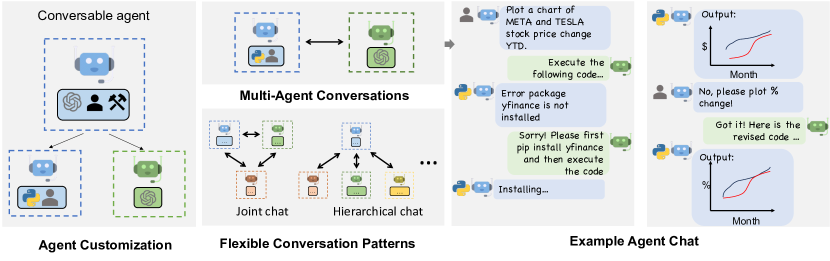

多智能体与 A2A 协作协议
一个 Agent 装不下所有能力时，让多个 Agent 分工协作。但多 Agent 不是「多开几个模型」——角色怎么分、消息怎么传、谁来编排，每一样都是设计决策。这一页覆盖角色分工、通信拓扑、编排模式，以及互操作协议 A2A（Agent2Agent），把「多 Agent 系统」拆到可以上手搭。
多智能体系统的三个层次：底层是「角色」（谁干什么），中间是「拓扑」（谁和谁说话），顶层是「编排」（谁来主导）。A2A 协议解决的是跨厂商互操作——不同团队做的 Agent 能互相发现、派活、汇报。
拆任务"] P --> W1["Worker A
检索"] P --> W2["Worker B
代码"] P --> W3["Worker C
写作"] W1 --> C["Critic
审查结果"] W2 --> C W3 --> C C -->|"不合格打回"| P C -->|"合格"| OUT["汇总交付"]
一、为什么要拆成多个 Agent
拆的动机通常来自三个瓶颈：上下文（一个 Agent 塞不下所有工具与记忆）、角色冲突（「既当运动员又当裁判」会互相干扰）、并行性（子任务可并行时，多 Agent 显著提速）。但拆也有代价：协调开销、错误传播、token 成倍增加。
工具 + 记忆超限"] Motive --> M2["角色冲突
运动员兼裁判"] Motive --> M3["并行提速
子任务可独立"] M1 --> Single{"单 Agent + 工具
能否搞定?"} M2 --> Single M3 --> Single Single -->|"能"| No["别拆
协调开销 > 收益"] Single -->|"不能"| Yes["拆
但控制 Agent 数量"] Yes --> Cost1["协调开销 ↑"] Yes --> Cost2["错误传播 ↑"] Yes --> Cost3["token 成本 ↑"]
判断标准很简单——如果单 Agent 加工具就能干完，就别拆。多 Agent 是「必要之恶」而非「越多越好」。业界经验：3-5 个 Agent 的系统协调收益最大，超过 10 个 Agent 协调成本常常超过收益。
二、角色分工：常见的三种模式
| 模式 | 组成 | 适用 | 代表场景 |
|---|---|---|---|
| Planner–Worker | 一个拆任务，多个执行 | 任务可分解、子任务独立 | 多步调研、报告生成 |
| Worker–Critic | 执行者 + 审查者，不合格打回 | 质量要求高、结果可复查 | 代码、写作、方案评审 |
| 辩论/协商 | 多个立场 Agent 互相质询 | 决策类任务，求收敛于更稳结论 | 方案选型、风险评估 |
拆任务"] --> W1a["Worker A"] P1 --> W1b["Worker B"] end subgraph Mode2["Worker-Critic"] W2a["Worker
执行"] --> C2["Critic
审查"] C2 -->|"打回"| W2a end subgraph Mode3["辩论协商"] D1["正方"] <--> D2["反方"] D2 <--> D3["裁判"] end
三、通信拓扑：谁和谁说话
角色定了之后，还要决定信息怎么流动。拓扑决定了系统的容错性、可扩展性和协调成本。
| 拓扑 | 结构 | 优点 | 缺点 | 适用 |
|---|---|---|---|---|
| 星型 | 编排器 ↔ 各 Worker | 控制简单、流程清晰 | 单点故障、编排器瓶颈 | 任务可拆解的常规场景 |
| 网状 | 任意 Agent 互连 | 最灵活、无单点 | 协调成本高、难调试 | 研究探索、小型团队 |
| 层级 | 树状分组管理 | 可扩展、分组隔离 | 深度深时延迟高 | 大规模系统、企业场景 |
四、编排模式：谁来主导
「谁来主导」是多 Agent 系统的灵魂问题。三种主流模式对应不同的人机协作哲学：
自主拆解分派"] A2["优点：自动化高"] A3["缺点：不可控
跑偏难发现"] end subgraph Human["人在回路"] H1["关键节点
人工审批"] H2["优点：可控可靠"] H3["缺点：慢"] end subgraph Flow["流程编排"] F1["预定义工作流
固定步骤"] F2["优点：稳定可预测"] F3["缺点：不灵活"] end Auto --> Decide{"按需求选择"} Human --> Decide Flow --> Decide Decide --> R1["探索期：自治"] Decide --> R2["生产期：流程 + 人在回路"]
五、A2A 协议：跨厂商互操作
2025 年 4 月，Google 联合多家厂商发布 A2A（Agent2Agent）开放协议，目标是让不同团队构建的 Agent 能「互相发现、派活、汇报」——就像 HTTP 让不同网站互通一样，A2A 让不同 Agent 互通。不过在讲协议之前，先看一张论文原图——它是 AutoGen 论文的第一张图，展示了多 Agent 协作最经典的画面：两个 Agent 之间一场能跑出结果的对话。

手把手读这张图。图的整体是一个「会话驱动」的协作画面：用户（User）在最左侧，只跟第一个 Agent 说话；中间是几个承担不同角色的 LLM Agent——比如一个负责「规划拆解」的 Agent、一个负责「写代码」的 Agent、一个负责「评审/批判」的 Agent；最右侧是工具与环境（Tools）。它们之间的每条连线都是一次消息交换。注意中间没有画一个「大总管」把所有人连起来——这正是 AutoGen 与编排式的区别：协作不是由外部控制器指挥，而是由 Agent 之间的对话自然推进。A 说出它的输出，B 作为输入接收并继续产出，如此接力直到任务收敛。
这张图点破了一个常被误解的点：多 Agent 的核心不是「多个模型」，而是「多个角色 + 一种消息协议」。角色定义「谁负责什么」，消息协议定义「角色之间怎么交流」。AutoGen 论文里用的就是自然语言消息（一段对话文本），而这正是 A2A 协议想要标准化的东西——只不过 A2A 更进一步，要求消息走 JSON-RPC、用 Agent Card 描述能力，让不同公司构建的 Agent 也能互相对话。所以把这张图和后面 A2A 的图放在一起看，你看到的就是「多 Agent 协作」从论文原型走向工业标准的过程。
（任务发起方）"] end subgraph Protocol["A2A 协议层"] P1["Agent Card
能力描述（发现）"] P2["Task 生命周期
任务状态机"] P3["消息传递
JSON-RPC"] end subgraph Server["远程 Agent"] S1["企业 Agent
（任务执行方）"] S2["第三方 Agent
（任务执行方）"] end Client --> Protocol --> Server P1 -.->|"能力发现"| C1
A2A 的三个核心机制：
- Agent Card：每个 Agent 发布一张「能力名片」（能干什么、输入输出格式），客户端据此发现并选择合适的 Agent；
- Task 生命周期：任务在 submitted → working → input-required → completed 等状态间流转，两端同步任务进度；
- 消息传递：基于 JSON-RPC 的 HTTP 传输，消息类型包括任务、工件（artifact）、消息等。
A2A 与 MCP 的关系常被混淆：MCP 是「Agent 用工具」，A2A 是「Agent 找 Agent」——MCP 把 Agent 的能力暴露给客户端调用（工具语义），A2A 让 Agent 作为对等实体协作（任务语义）。两者互补：一个 Agent 既可以通过 MCP 暴露工具，也可以通过 A2A 与其他 Agent 协作。详见 工具调用与 MCP。
持续到完成"] end MCP --> Q{"区别"} A2A --> Q Q --> Ans["MCP: 工具互操作
A2A: 智能体互操作"]
六、多 Agent 系统的常见失败模式
多 Agent 系统比单 Agent 更容易「失控」，认识失败模式是工程基本功：
应对：明确验收标准"] F1 -->|"否"| F2{"回声室?"} F2 -->|"是（互相附和）"| D2["原因：同质化模型
应对：引入 Critic / 多样性"] F2 -->|"否"| F3{"协调爆炸?"} F3 -->|"是（消息成倍增长）"| D3["原因：拓扑过密
应对：收敛拓扑 / 减少 Agent"] F3 -->|"否"| F4{"错误传播?"} F4 -->|"是（一个错带崩一串）"| D4["原因：无隔离
应对：结果校验 + 回滚"] F4 -->|"否"| OK["正常运行 ✓"]
| 失败模式 | 表现 | 应对 |
|---|---|---|
| 任务漂移 | Agent 偏离原始目标 | 明确验收标准、定期对齐 |
| 回声室 | 互相附和、无有效质疑 | 引入独立 Critic、角色差异化 |
| 协调爆炸 | 消息量随 Agent 数平方增长 | 收敛拓扑、减少 Agent 数量 |
| 错误传播 | 上游错误污染下游 | 逐步校验、回滚机制 |
七、协作模式深度对比：编排式、辩论式、群体式
第二章把角色分成 Planner-Worker、Worker-Critic、辩论协商三种，那是「角色」层面的分类。站在「系统怎么转起来」的层面，业界更常谈三种协作模式：编排式、辩论式、群体式。三者对应不同的控制哲学，也对应不同的适用场景——选错模式，系统要么难用、要么不可控。
编排式（Orchestration）是最常见的模式：一个明确的「主导者」负责拆任务、派活、收集结果，其他 Agent 是被动响应者。它的优点是控制流清晰，每一步谁在干什么都说得清，天然适合需要严格流程的生成任务；缺点是主导者本身成为瓶颈和单点——它既要理解全局，又要调度所有下游，主导者一旦跑偏，全盘皆输。下面这张时序图展示了编排式协作的一个典型回合：Orchestrator 派活、Worker 交回工件、Critic 审查打回，所有消息都经过主导者，没有人越过它直接通信。
辩论式（Debate）则完全相反：没有主导者，多个立场 Agent 各自独立推理、互相质询，最后靠裁判或投票收敛。它的价值在于用「观点对抗」压制单个模型的确认偏误——同一个模型可能因为 prompt 措辞不同就给出倾向性答案，但「正方 vs 反方」的对抗能让双方都把论据漏洞摆到台面上。代价是 token 消耗大（每轮质询都是完整推理）、耗时随轮数线性上涨，而且裁判本身也可能被带偏。群体式（Swarm）介于两者之间：没有显式主导者，Agent 通过共享的「黑板」或消息队列自发协作，行为是涌现的。它最灵活，但也最难预测——你无法事前画出完整的调用图，只能靠事后观测轨迹来理解系统在做什么。
| 维度 | 编排式 | 辩论式 | 群体式 |
|---|---|---|---|
| 主导者 | 显式 Orchestrator | 无，靠裁判或投票 | 无，涌现式 |
| 可控性 | 高，流程可审计 | 中，结果可控过程难控 | 低，过程难预测 |
| 观点多样性 | 低，容易趋同 | 高，立场天然对抗 | 高，行为自发涌现 |
| 成本 | 可控，消息量 O(N) | 高，质询轮数乘以完整推理 | 高，消息量 O(N²) |
| 适用场景 | 业务流程、内容生成 | 方案评审、风险研判 | 研究探索、开放式问题 |
选型建议：业务系统（要可解释、可审计）选编排式；开放决策（要压制偏差、结论稳）选辩论式；研究探索（要涌现能力、不要求可控）才考虑群体式。这个取舍本质上是在「可控性」和「多样性」之间权衡，没有免费的午餐。
八、通信开销：N 个 Agent 的 O(N²) 消息账本
多 Agent 系统里最容易被低估的成本是消息本身。每一条「Agent 给 Agent」的消息，都要经过一次完整的模型推理——发消息的 Agent 要生成它，收消息的 Agent 要读它并接着推理。也就是说，消息量和总 token 成本、总延迟直接挂钩，而通信量的增长规律非常反直觉：在两两可互通的网状拓扑里，N 个 Agent 需要维护的对话边数是 N(N−1)/2，消息量随 N 的平方增长。
算一笔具体的账。假设单条 Agent 间消息平均消耗 3000 token（包含上下文重放和推理），3 个 Agent 网状协作完成一轮「各发一条给所有人」的同步需要 6 条消息、约 18000 token；5 个 Agent 时，单轮全互联是 20 条消息、约 60000 token；如果每个 Agent 还要逐条回复别人的消息（多轮全互联），消息数直接涨到 N(N−1) 量级——10 个 Agent 就是 90 条以上、单轮超过 27 万 token。这也是为什么「超过 10 个 Agent 协调成本失控」不是感觉而是数学：不是 Agent 变笨了，是通信矩阵本身撑不住了。
三个降低通信开销的工程手段：一是收敛拓扑——从网状收成星型，让编排器做信息的「汇聚与转发」，边数从 N(N−1)/2 降到 N；二是消息精简——只传「结论 + 引用」而不是全量上下文，比如 Worker 只上报「检索到 3 条相关结果，来源分别为…」，一条 3000 token 的消息能压到 300 token；三是异步批处理——把「一问一答」改成「攒一批再统一处理」，减少同步等待的时间成本。三者叠加，往往能把通信成本砍掉一个数量级，而系统能力几乎不变——因为 Agent 间真正需要传递的信息，通常远少于它推理时占用的 token。
展开：一个 10-Agent 全互联系统的完整账本
假设一个 10 个 Agent 的全互联网状系统，每个 Agent 每轮同步把自己的中间结果广播给其余 9 个、并回复收到的每条消息。消息总数约 N(N−1) = 90 条。设单条消息平均 3000 token（含上下文重放与回复推理），单轮全同步的 token 消耗约 27 万。若按主流 API 定价粗估（输入约 0.5-1.5 美元 / 百万 token，输出贵数倍），单轮仅消息成本就在 0.2-1 美元量级，而一次真实任务往往要跑几十轮。
对比同一个 10-Agent 任务改成星型拓扑：每条消息只在编排器和单个 Worker 之间传，单轮消息数降到 10 条（每个 Worker 一条结果加一条指令），token 量约 3 万，成本下降一个数量级；如果再配合「只传结论不传上下文」的精简，消息成本还能再降 3-5 倍。这个算例想说明的是：通信拓扑的选择不是风格问题，而是实打实的成本问题。
以上定价为数量级参考，不同模型与计费方式差异很大；真正要紧的不是精确数字，而是「O(N²) 增长」这个形状——N 从 5 到 10，消息量翻了 4 倍。
九、死锁与歧义：通信层的失败模式
第六章讲的四种失败模式（任务漂移、回声室、协调爆炸、错误传播）是「目标层面」的失败；这一节看「通信层面」的失败——它们同样致命，但更难排查，因为表象常常只是「系统卡住了」或「结果怪怪的」。
第一种是死锁。多 Agent 协作里的死锁，形态不是并发系统经典的「持锁互等」，而是「互相等待对方的输入」：Agent A 的下一步需要 Agent B 的结果，Agent B 的下一步又需要 Agent A 的结果，于是两者都停在「等待」状态，谁也不会先动。典型诱因是协作图里有环——编排式系统很少踩这个坑，因为主导者决定了依赖方向；而网状或群体式系统里，环形依赖几乎是设计时的常态。防御手段很朴素：每条消息带超时。任何 Agent 等待回复超过阈值（比如 30 秒）就必须主动进入「超时处理」分支：放弃当前子任务，或向更高级别的协调者上报，而不是无限期等下去。
第二种是歧义。Agent 之间的消息是自然语言，自然语言天然有歧义。Worker 收到「把结果整理一下」——「整理」是指格式化？是摘要？还是翻译成另一种风格？如果双方对「整理」的理解不一致，下游就会拿到货不对板的东西，而且错误一路传播，直到最终交付才发现。防御有两个层面：一是结构化协议——重要消息用固定字段（如 {"action": "summarize", "target": "report", "format": "markdown"}）而不是自由文本，把歧义消灭在协议层；二是确认回执——收消息方先回「我理解的任务是 X，对吗？」，双方对齐后再干活。前者压成本，后者保正确，实践中通常混用：常规消息走结构化字段，关键节点加一次确认。
第三种是部分失败：一个 Agent 崩了或返回垃圾，其他 Agent 还在按原计划推进，直到最后一步才发现整体不可用。这要求系统层做「结果校验 + 隔离」——每个子任务的产出在进入下一个环节之前先过一道校验（格式对不对、字段全不全、是否明显偏离），校验不过就把失败限制在局部，而不是让脏数据流向下游。三种失败模式有一个共同点：它们都不是「模型不够聪明」，而是「协议和流程不够健壮」——这也是为什么多 Agent 系统的工程重点在框架层，而不在模型层。
十、工程落地：消息总线、超时与可观测性
前面的讨论都在「架构」层面，落地时三个基础设施问题绕不开：消息怎么传、超时怎么管、出了事怎么查。把这三个问题解决在框架层，业务代码就能只关心「自己的 Agent 干什么」，而不是「怎么和其他 Agent 通信」。先看系统在组件层面大概长什么样：
再看消息怎么传。最简单的实现是直接函数调用——Agent A 直接调 Agent B 的方法。但一旦超过三五个 Agent，「点对点硬编码」就维护不动了：谁调了谁、消息有没有丢、能不能回放，全都说不清。更可靠的做法是引入一个消息总线（或消息队列）：所有 Agent 只和总线通信，总线负责路由、持久化、失败重试。下面是一个极度简化的骨架，两个 Agent 通过一个内存队列协作——它刻意省略了几乎所有生产级细节，但保留了「解耦 + 异步」的核心形态：
import queue
import threading
bus = queue.Queue() # 消息总线：全局唯一的队列
def worker(name):
"""Worker 循环：从总线取任务，产出结果发回总线"""
while True:
msg = bus.get() # 阻塞等待消息
if msg.get("to") != name:
bus.put(msg) # 不是发给我的，放回队尾（简化版轮询）
continue
task = msg["task"]
if task == "检索":
result = "检索结果: 3 条相关论文"
elif task == "写作":
result = "初稿: 基于检索结果完成第一章"
else:
result = f"[{name}] 未知任务"
bus.put({"to": "orchestrator", "from": name, "result": result})
def orchestrator(plan):
"""编排器：按计划派活，然后收集结果"""
for step in plan:
bus.put({"to": step["agent"], "from": "orchestrator",
"task": step["task"]})
received = 0
while received < len(plan):
msg = bus.get(timeout=5) # 最多等 5 秒
if msg.get("to") == "orchestrator":
print(f"[orchestrator] 收到 {msg['from']}: {msg['result']}")
received += 1
# 注册两个 Worker 线程
threading.Thread(target=worker, args=("worker_a",), daemon=True).start()
threading.Thread(target=worker, args=("worker_b",), daemon=True).start()
# 编排器派活并收结果（生产环境必须有超时、去重与错误标记）
orchestrator([
{"agent": "worker_a", "task": "检索"},
{"agent": "worker_b", "task": "写作"},
])这段代码刻意省略了三件生产必需的事。第一是超时：bus.get(timeout=5) 只是「最多等 5 秒」，真实系统里每个子任务都要有独立的超时和重试策略——Agent 推理时间波动很大，同一任务有时 2 秒、有时 30 秒，固定超时要么误杀要么形同虚设，通常用「上限 + 指数退避重试」组合。第二是可观测性：生产级总线会给每条消息加 trace_id，让一次任务的完整消息链可以按 ID 拉出来重放——这是排查「多 Agent 到底怎么得出这个结果」的唯一手段，也是审计和安全合规的基础。第三是流控与背压：当某个 Worker 处理不过来时，总线要能缓冲或拒绝新消息，而不是无限堆积。把这三点补上，一个「能跑」的消息总线就接近「能上线」了。
最后回到一个反直觉的结论：多 Agent 系统的复杂度，大部分不是来自「多个模型」，而是来自「通信」。模型再聪明，也救不了协议上的漏洞；反过来，协议足够健壮，即便单个 Agent 偶尔犯错，系统也能兜住。这也是这一页从角色、拓扑、编排一路讲过来，最后落在消息总线上、而不是落在某个 Agent 内部的原因。
十一、多 Agent 的评测：怎么知道「协作」真的有效
单 Agent 好办：给任务、看输出、算分。多 Agent 系统的评测难在两个地方：一是「任务输出」和「协作过程」要分开评；二是过程质量很难自动化。如果只盯着最终结果，一个靠「回声室互相附和」糊弄出来的结论和一个经过真实质询收敛的结论，得分可能一样高——但可靠性完全不同。
评测多 Agent 系统，业界通常拆成三个层次。第一层是任务成功率：沿用单 Agent 的评测思路（如 τ-bench 这类工具-用户交互基准），看系统在真实场景里完成任务的比率。第二层是过程可验证性：任务完成后，能否从轨迹里回放「哪个 Agent 干了什么、消息怎么流转、关键决策由谁做出」——这层不量化分数，但它决定结论能不能被审计、被复现。第三层是消融对比：把多 Agent 系统替换成单 Agent + 工具，或去掉 Critic，看分数掉多少。如果去掉 Critic 分数几乎不变，说明 Critic 形同虚设；如果多 Agent 和单 Agent 分数差不多，说明这个任务根本不需要拆——这正好呼应了第一章「单 Agent 能搞定就别拆」的判断。
一个实操建议：给多 Agent 系统建「过程指标」而不是只看结果指标。常见的三个过程指标是——每任务消息数（是不是协调爆炸了）、每 Agent 平均活跃度（有没有 Agent 在挂机附和）、打回重做率（Critic 真正抓到几次错）。这三个数字能比「最终成功率」更早暴露系统退化：消息数暴涨通常发生在拓扑失控之前，活跃度塌陷通常发生在回声室形成之前。把这些指标接进上一节说的可观测性基础设施，多 Agent 系统的调优就从「玄学」变成了「看数据」。
最后提醒一个评测容易踩的坑：评测样例的粒度。用「单轮问答」式的样例去测多 Agent 系统，几乎测不出协作能力——协作系统的价值恰恰体现在需要拆分、需要多轮往返的长任务上。建议评测集里至少包含一部分「必须分步、且步骤之间存在依赖」的任务；否则跑出来的分数只能说明「模型本身强不强」，和协作设计好不好基本无关。这一条反过来也成立：如果你的业务场景都是单轮短任务，那大概率不需要多 Agent，回到第一章「单 Agent 能搞定就别拆」的判断即可。
展开：一个编排式协作的真实消息日志——看 Critic 如何打回
下面是一个 3-Agent 编排式系统处理「写一份 RAG 技术调研报告」的消息日志。注意看 Critic 打回时发生了什么——这是多 Agent 里最值钱的一环：
[orchestrator] → [worker_a] 子任务1: 检索 RAG 相关的 3 篇核心论文
[worker_a] → [orchestrator] 返回: 找到 3 篇 (Lewis2020, Chen2023, Wang2024) + 各 1 行摘要
[orchestrator] → [worker_b] 子任务2: 基于上述摘要撰写 300 字综述
[worker_b] → [orchestrator] 返回: 初稿完成(300字)
[orchestrator] → [critic] 请审查初稿
[critic] → [orchestrator] 不合格: 缺少「与朴素 RAG 的对比」, 且未引用 Wang2024 的核心观点
[orchestrator] → [worker_b] 打回修改: 补充对比段落, 并纳入 Wang2024 观点
[worker_b] → [orchestrator] 返回: 修订稿完成(420字)
[orchestrator] → [critic] 复审
[critic] → [orchestrator] 通过
[orchestrator] → [user] 交付最终稿三个要点：① 打回时必须带具体原因（「缺少对比」「未引用核心观点」），否则 worker 只能盲目重写；② 限制打回次数（比如同一稿最多打回 2 次），防止「批评-重写」死循环烧 token；③ 记录打回重做率——如果 Critic 每次都打回，说明 worker 太弱或任务拆解不合理；如果从不打回，说明 Critic 形同虚设。
十二、2024-2026 进展与趋势
| 方向 | 进展 | 影响 |
|---|---|---|
| A2A 协议落地 | 多厂商支持、开源实现出现 | 跨厂商 Agent 协作成为可能 |
| Agent 框架成熟 | AutoGen、CrewAI、LangGraph 等稳定 | 多 Agent 搭建成本大降 |
| 多 Agent 评估 | τ-bench 等协作基准出现 | 「协作能力」可度量 |
| 可观测性 | 轨迹追踪、审计工具完善 | 生产可用性提升 |
| 人类监督接口 | 人在回路的标准化 | 安全可靠落地 |
要点速查
- 本质：多 Agent = 角色分工 + 通信拓扑 + 编排模式，拆的目的是解决上下文、角色冲突、并行性三大瓶颈。
- 拆分判断：单 Agent + 工具能搞定就别拆；3-5 个 Agent 协调收益最大，超过 10 个成本失控。
- 三种角色：Planner-Worker（拆解执行）、Worker-Critic（执行审查）、辩论协商（立场质询）。
- 三种拓扑：星型（易控制）、网状（最灵活）、层级（可扩展），按规模与容错需求选择。
- 三种编排：完全自治（快但不可控）、人在回路（可靠但慢）、流程编排（稳定但不灵活）；生产用后两者组合。
- A2A 协议：Agent Card 发现 + Task 状态机 + JSON-RPC 消息；与 MCP 互补——MCP 管工具、A2A 管任务。
- 失败模式：任务漂移、回声室、协调爆炸、错误传播，各有对应防御。
- 常见坑：Agent 越多越好；同质化模型互相附和无质疑；拓扑过密导致消息爆炸；忽视上游错误传播。
参考文献与延伸阅读
- A2A Protocol 官方文档 — Agent2Agent 开放协议规范 · a2a-protocol.org
- AutoGen: Enabling Next-Gen LLM Applications via Multi-Agent Conversation — 多 Agent 框架 · arXiv:2308.08155
- Communicative Agents for Software Development（ChatDev）— 多 Agent 软件开发 · arXiv:2307.07924
- τ-bench: A Benchmark for Tool-Agent-User Interaction in Real-World Domains — 多 Agent 协作基准 · arXiv:2406.12045